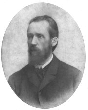

Almanach Ruch (1868)

Ruchovci
|
RUCHOVCI neboli NÁRODNÍ ŠKOLA
U příležitosti položení základního kamene Národního divadla vyšel almanach Ruch (1868), který dal jméno jedné skupině nastupující generace spisovatelů. Ruchovci kladli velký důraz na vlastenectví, oslavovali českou historii a hlásili se k myšlence slovanské vzájemnosti. Jejich program se proto označuje jako národní škola.
Almanach Ruch nesl podtitul Básně české omladiny a uspořádal ho Josef Václav Sládek z příspěvků, které se sešly na základě veřejné výzvy. Výtěžek z prodeje ročenky byl určen na stavbu Národního divadla.
Kromě Sládka přispěli do almanachu svými básněmi Svatopluk Čech, historik Jaroslav Goll, estetik Josef Durdík, Ladislav Quis, Bohuslav Čermák a řada méně významných autorů. Další ročenky vyšly v letech 1870 a 1873. Přispěla do nich například Eliška Krásnohorská. Ruchovci rovněž publikovali ve svých časopisech Květy a Osvěta.

Mikoláš Aleš: Pobití Sasíků pod Hrubou Skálou
|

Národní divadlo v Praze

Plakát k premiéře Smetanovy opery Libuše, kterou se slavnostně otvíralo Národní divadlo v roce 1881.
|
Svatopluk Čech (1846-1908)
Čechovým rodištěm byl Ostředek u Benešova, pobýval v Obříství u Mělníka a zemřel v pražské Troji.
Vystudoval práva, ale věnoval se hlavně redaktorské práci v časopise Květy. Nejslavnější jsou jeho satirické prózy o panu Broučkovi. Zfilmována byla povídka Jestřáb kontra Hrdlička. Těžiště Čechovy tvorby tvoří veršovaná epika – Adamité, Evropa, Slavie, Lešetínský kovář, Ve stínu lípy, Dagmar, Václav z Michalovic atd. Širokého ohlasu dosáhla básníkova lyrika, obzvláště Jitřní písně a Písně otroka. Na sklonku života napsal autobiografické Vzpomínky z cest.
Broučkiády
Ruda Šváb: Matěj Brouček


Čermák: Husité průsmyk bránící
Čechova báseň Lešetínský kovář propadla konfiskaci, dál ale kolovala mezi lidmi v opisech. Co úřadům na básni vadilo?
|
Čechova lyrika
Čechova tvorba zahrnuje hlavně básně vlastenecké a politickou lyriku. Ve svých verších brojil proti nesvobodě a bojoval za posílení národního sebevědomí, ale jeho myšlenky byly natolik obecné, že si je brali za své představitelé nejrůznějších názorových proudů a politických stran. To je typický rys sbírek Jitřní písně, Písně otroka, Nové písně nebo Menší básně.
Broučkiády Svatopluka Čecha
Pražský maloměšťák Matěj Brouček je hlavní postavou satirických próz Svatopluka Čecha Pravý výlet pana Broučka do Měsíce, Nový epochální výlet pana Broučka, tentokrát do patnáctého století a Pestré cesty po Čechách, jejichž druhý díl nese podtitul Matěj Brouček na výstavě.
Matěj Brouček upřednostňuje vlastní pohodlí, dobré jídlo a pití. O jiné věci se moc nezajímá. Mezi přejemnělými měsíčany působí jako buran, v době husitských bouří zase jako zbabělec. Zároveň ale můžeme husity označit za fanatiky, kteří vraždí své protivníky pouze kvůli drobným odchylkám ve víře. Obyvatelé Měsíce jsou zase až příliš éteričtí, přehnaně estétští a namyšlení...
Čechova epika
Některé básně Svatopluka Čecha musíme chápat jako alegorie. Například Evropa a Slavie jsou dvě lodi, které symbolizují osud evropských národů. Evropa veze do vyhnanství radikální a umírněné revolucionáře, jejichž spory vedou k ztroskotání korábu a smrti všech pasažérů. Naopak rozhádaní představitelé různých národů na lodi Slavie se nakonec dokážou dohodnout a z bouře vyváznou...
Rámec cyklu veršovaných povídek Ve stínu lípy tvoří setkání vesničanů, kteří si krátí nedělní odpočinek vypravováním vlastních životních osudů. Postupně mluví sedlák, krejčí, kantor, vysloužilý voják, hostinská, pojezdný a šumař. Idylické vyznění umocňují slova mlynáře, který v závěru opěvuje rodnou zem.
|

Svatopluk Čech byl oddaný vlastenec, hlásil se k myšlence slovanské vzájemnosti a neuznával napodobování zahraničních vzorů. Pro jeho uměleckou tvorbu je typický sklon k idyličnosti, rétoričnosti a přehnanému patosu.

Charakterizuj postavu Matěje Broučka.
Jak se projevuje jeho povaha v konkrétních situacích?
Myslíš si, že pan Brouček reprezentuje českou národní povahu?
Jací jsou obyvatelé Měsíce podle Čecha?
Jaké obrazy se líbí tobě?
Co si myslíš o vegetariánství a vegetariánech?
Jací jsou obyvatelé Marsu?
Charakterizuj postavy husitů.
Najdi v textu ironické pasáže.
Co je satira?
Vyhledej přesný význam slov, kterým v ukázce nerozumíš.

Aleš: obálka Čechova časopisu Květy
Co je alegorie?
Kdo byla Dagmar?
Co víš o Václavu z Michalovic?
Kde najdeš názvy dalších děl Svatopluka Čecha?
|
Josef Václav Sládek
(1845-1912)
Sládkovým rodištěm byl Zbiroh u Berouna, zde také skonal. Po maturitě na gymnáziu cestoval dva roky po Severní Americe. Živil se tam jako učitel, novinář i dělník. Po návratu do Čech pracoval jako redaktor a učil angličtinu.
Jeho první žena zemřela při porodu spolu s dítětem. S druhou manželkou měl dceru Helenku, pro kterou psal dětskou poezii. Přeložil většinu Shakespearových dramat a Longfellowovu Píseň o Hiawatě. Jeho fejetony vyšly posmrtně pod názvem Americké obrázky a jiná próza. Sládek uspořádal almanach Ruch, ale později redigoval časopis Lumír. Můžeme ho tudíž zařadit k ruchovcům i lumírovcům. Tematický záběr jeho tvorby byl velmi široký. V Sládkových sbírkách se střídají básně vlastenecké, reflexivní, přírodní a intimní lyrika, balady i další žánry. Některé z nich se dočkaly zhudebnění.
Malý čtenář
Sládek a mnozí další spisovatelé přispívali do časopisu Malý čtenář (1882-1941), který byl určen dětem.
|
Sládkova poezie pro dospělé
Sládek zúročil americký pobyt už v prvních básnických sbírkách Básně a Jiskry na moři. Druhou z nich ovlivnila také smrt jeho manželky. Motivy vlastenecké, reflexivní i epické se prolínají sbírkami Světlou stopou, Na prahu ráje a
Sluncem a stínem. Venkovský život, niterný vztah k půdě a tvrdou práci rolníků oslavil v knihách Selské písně a České znělky, Starosvětské písničky a jiné písně nebo Směska.
V závěru života se věnoval lyrice politické – České písně a intimní – V zimním slunci, Za soumraku, Léthé a jiné básně.
Sládkova poezie pro děti
Sládek byl průkopníkem tvorby pro děti. Do té doby byli dětští čtenáři odkázáni hlavně na lidovou slovesnost. Umělecká tvorba byla totiž příliš formálně i myšlenkově náročná a vlastenecké náměty neodpovídaly zájmu dětí. Sládek proto psal krátké jednoduché básně, které byly dětskému pohledu na svět mnohem bližší. Shrnul je do sbírek Zlatý máj, Skřivánčí písně a Zvony a zvonky.
|

Chittussi: J.V.Sládek
Která ze Sládkových básní se ti líbí nejvíce? Proč?
Znáš i jiné básníky, kteří se věnovali tvorbě pro děti?
Jaká by podle tebe měla být poezie pro děti?
Ve kterých časopisech pravidelně vycházejí dětské říkanky?
Zkus napsat vlastní báseň pro děti. Pro jak staré děti je určena? Jak se jim líbila?
|
Eliška Krásnohorská
(1847-1926)
Alžběta Pechová pocházela z Prahy, kde také zemřela. Ve 14 letech navštěvovala Ústav pro ženské ruční práce, další vzdělání získala jako samouk. Byla redaktorkou Ženských listů, předsedkyní Ženského výrobního spolku a roku 1890 založila první dívčí gymnázium Minerva.
Co víš o Smetanovi?
Jaká byla historie gymnázia Minerva? Kdo byla Minerva?
Jaký je tvůj názor na feminismus?
Čím se zabývají gender studies?
|
Eliška Krásnohorská
Krásnohorská zpracovala pro dospívající dívky původně německé příběhy o Svéhlavičce a v podobném duchu sepsala původní české prózy Celinka, Celinčino štěstí nebo Mladým srdéčkům. Proslavila se jako autorka operních libret. Psala rovněž básně, divadelní hry, studie (Bedřich Smetana) a teoretická pojednání (Poezie a pravdivost). Překládala Byrona, Puškina a Mickiewicze.
Pro hudebního skladatele Bedřicha Smetanu napsala čtyři operní libreta Hubička (podle stejnojmenné povídky Karolíny Světlé), Viola (na námět ze Shakespeara), Tajemství a Čertova stěna.
Ve stati Obraz novějšího básnictví českého se Krásnohorská opřela do Vrchlického. Kritizovala jeho kosmopolitismus a vyzdvihovala tzv. ideální realismus. Na základě tohoto článku se rozhořel vášnivý umělecký spor mezi stoupenci ruchovců a lumírovců, který urovnal až Jan Neruda. Ten dal diplomaticky za pravdu oběma stranám...
|

Eliška Krásnohorská
|
Internetové stránky
Píseň o Hiawatě, Sládkův překlad
Čech: Nový epochální výlet pana Broučka, tentokrát do XV. století, Čerkes, Hanuman, Husita na Baltu, Písně otroka
Tipy
Feminismus
Malý čtenář, ukázka zveřejněná v časopise Okruh 1995/2, strana 4 a strana 5

Aleš: Husita na Baltu
|
Doporučená četba
Čech, Svatopluk: Básně, Československý spisovatel, Praha 1983
Čech, S.: Písně otroka a jiné básně, Orbis, Praha 1952
Čech, S.: Výlety a pestré cesty pana Broučka a společníků, Naše vojsko, Praha 1956
Krásnohorská, Eliška: Výbor z díla (2 svazky), SNKLHU
Krejčí, Karel: Svatopluk Čech a Matěj Brouček, pražský měšťan, Praha 1952
Jankovič, Milan: Josef Václav Sládek, Svobodné slovo, Praha 1963
Malý, Miloš: Tvář básníka J.V.Sládka, Státní nakladatelství, Praha 1945
Polák, J.: Charakter ruchovského období české literatury, Olomouc 1962
Přední díla Svatopluka Čecha (7 svazků), F. Topič, Praha 1946
Sládek, Josef Václav: Má Amerika, Praha 1988
Sládek, J.V.: Sluncem a stínem a jiné básně, Odeon, Praha 1972
Sládek, J.V.: Tiché hovory, Československý spisovatel, Praha 1989
Strejček, F.: J.V.Sládek – jak žil, pracoval a trpěl, Praha 1915
Vlašínová, Drahomíra: Eliška Krásnohorská, Melantrich, Praha 1987
Ze vzpomínek Elišky Krásnohorské, Československý spisovatel, Praha 1950
|
Vypracuj písemný referát o některé z uvedených knih.
První číslo Ženských listů Elišky Krásnohorské
|
|